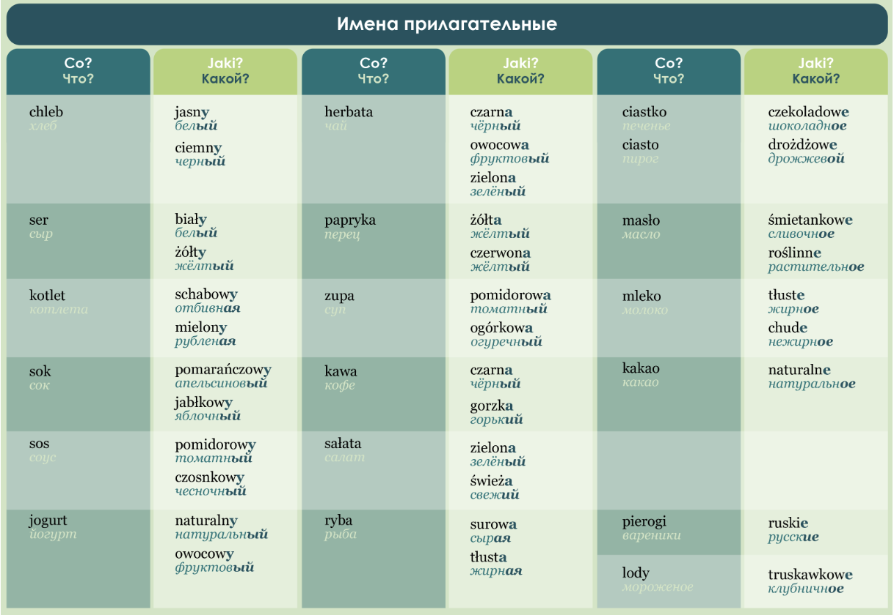

lekcja 7 - УРОКИ ПОЛЬСКОГО ЯЗЫКА. УРОК 7
biornik: rzeczowników i przyviotników, liczebniki 100-1000
(винительный падеж: существительные и прилагательные, числительные 100-1000.)
Винительный падеж в польском языке
Krok po kroku A1 Урок 7, часть 1
Na śniadanie jem jajecznicę i piję kawę.
Na drugie śniadanie jem owoc i jogurt.
Na obiad jem zupę i kurczaka oraz piję sok.
Na podwieczorek jem sałatkę i piję wodę.
Na kolację jem kanapkę i piję herbatę.
Na śniadanie chciałbym jajecznicę.
Na obiad chciałabym zupę pomidorową.
Poproszę makaron z sosem i zieloną herbatę.
Poproszę hamburgera z kurczakiem i sosem.
Прилагательные, как и существительные, изменяются по падежам. Форма винительного падежа мужского рода неодушевленных существительных и прилагательных совпадает с формой именительного падежа: To jest żółty ser. Jem żółty ser. Прилагательное женского рода в винительном падеже имеет окочание –ą. Jem zupę jarzynową.
